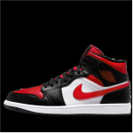
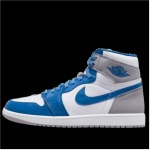

Tênis inspirado no maior
O tênis Air Jordan 1 Mid é inspirado no primeiro AJ1, oferecendo aos fãs OG uma visão da evolução da marca Jordan desde 1985. Detalhes elaborados, como a etiqueta e a etiqueta retrô em preto e vermelho.
Comemorando os 35 anos do Air Jordan 3, esses tênis combinam a silhueta clássica do AJ1 com uma colorway original do AJ3. Feito de acordo com as especificações de 1985, ele tem couro premium, gola alta e a etiqueta na língua que você conhece e adora.
Inspirada nos tempos de colégio de MJ, esta versão colorida traz a energia A+ para as ruas. Explosões ousadas de Game Royal e Varsity Maize permitem que você se junte à equipe com estilo, enquanto o couro sutilmente envelhecido aumenta o apelo vintage.